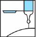

RÉSUMÉ DES CARACTÉRISTIQUES DU PRODUIT
ANSM - Mis à jour le : 30/04/2012
FRAGMINE 15 000 U.I. anti-Xa/0,6 ml, solution injectable en seringue pré-remplie
2. COMPOSITION QUALITATIVE ET QUANTITATIVE
Daltéparine sodique .......................................................................................................... 15 000 U.I. anti-Xa
Pour une seringue préremplie de 0,6 ml.
1 ml de Fragmine 15 000 U.I. anti-Xa/0,6 ml correspond environ à 25000 U.I. anti-Xa de daltéparine sodique.
Pour la liste complète des excipients, voir rubrique 6.1.
Solution injectable en seringue préremplie.
4.1. Indications thérapeutiques
Cette héparine est une héparine de bas poids moléculaire (HBPM).
Traitement prolongé de la maladie thromboembolique veineuse symptomatique et prévention de ses récidives, chez les patients cancéreux.
4.2. Posologie et mode d'administration
UNE SEULE INJECTION PAR JOUR.
Cette présentation est adaptée à l'adulte.
Ne pas injecter par voie I.M.
1 ml de FRAGMINE 15 000 U.I. anti-Xa/0,6 ml correspond environ à 25000 U.I. anti-Xa de daltéparine sodique.
Utilisation du système de sécurité Needle-Trap : voir rubrique 6.6.
Technique de l'injection sous-cutanée
· Ne pas purger la bulle d'air dans les seringues pré-remplies.
· L'injection sous-cutanée de la daltéparine doit être réalisée de préférence chez le patient en décubitus, dans le tissu cellulaire sous-cutané de la ceinture abdominale antérolatérale et postérolatérale, alternativement du côté droit et du côté gauche ou sur la face antérieure des cuisses en cas d'intolérance locale.
· L'aiguille doit être introduite perpendiculairement et non tangentiellement, sur toute sa longueur, dans l'épaisseur d'un pli cutané réalisé entre le pouce et l'index de l'opérateur. Ce pli cutané doit être maintenu pendant toute la durée de l'injection.
Recommandation générale
La surveillance régulière de la numération plaquettaire est impérative en raison du risque de thrombopénie induite par l'héparine (TIH) (voir rubrique 4.4). Voir également ci-dessous la conduite à tenir en cas de thrombopénie induite par la chimiothérapie.
Traitement prolongé de la maladie thromboembolique veineuse symptomatique et prévention de ses récidives pendant le 1er mois suivant l'événement
Fréquence d'administration: 1 injection par jour.
Dose administrée: la dose par injection est de 200 U.I. anti-Xa/kg. La dose maximale quotidienne ne doit pas excéder 18000 U.I.
Le flacon sera utilisé avec des seringues d'un volume maximum de 1,00 ml et graduées de 0,01 ml en 0,01 ml.
Le tableau ci-dessous présente des exemples de volumes à administrer par jour en fonction du poids corporel du patient. Les seringues pré-remplies pourront être également utilisées lorsque le poids des patients correspond aux dosages.
Une surveillance régulière du poids des patients cancéreux est nécessaire pour ajuster le traitement en fonction d'un poids récent.
|
Poids corporel |
Volume (ml) de daltéparine recommandé par injection |
Seringue pré-remplie correspondante |
|
|
(kg) |
|
||
|
40-42 |
0,32 |
|
|
|
43-47 |
0,36 |
|
|
|
48-52 |
0,40 |
Seringue pré-remplie 10000 |
|
|
53-56 |
0,44 |
|
|
|
57-59 |
0,47 |
|
|
|
60-64 |
0,50 |
Seringue pré-remplie 12500 |
|
|
65-68 |
0,53 |
|
|
|
69-72 |
0,56 |
|
|
|
73-77 |
0,60 |
Seringue pré-remplie 15000 |
|
|
78-82 |
0,64 |
|
|
|
83-87 |
0,68 |
|
|
|
≥88 |
0,72* |
Seringue pré-remplie 18000* |
*Cette posologie maximale de 0,72 ml (18000 U.I.) a été utilisée chez des patients pesant jusqu'à 132 kg dans l'étude CLOT.
Prévention des récidives des événements thromboemboliques veineux du 2ème au 6ème mois suivant l'événement
Fréquence d'administration : 1 injection par jour.
Dose administrée : la dose par injection est de 150 UI anti-Xa/kg. La dose maximale quotidienne ne doit pas excéder 18000 UI. Les seringues pré-remplies seront utilisées à l'aide du tableau ci-dessous.
Une surveillance régulière du poids des patients cancéreux est nécessaire pour ajuster le traitement en fonction d'un poids récent.
|
Poids corporel |
Dose de daltéparine recommandée (U.I. /j) |
|
|
40-56 |
7500 U.I. dans 0,3 ml |
|
|
57-68 |
10000 U.I. dans 0,4 ml |
|
|
69-82 |
12500 U.I. dans 0,5 ml |
|
|
83-98 |
15000 U.I. dans 0,6 ml |
|
|
>99 |
18000 U.I. dans 0,72 ml |
Durée de traitement: la durée recommandée est de 6 mois. L'intérêt de poursuivre le traitement au-delà de cette période sera évalué en fonction du rapport bénéfice/risque individuel, en prenant notamment en compte l'évolutivité du cancer. Si le traitement anticoagulant doit être poursuivi, aucune donnée n'étant disponible avec la daltéparine au-delà de 6 mois de traitement, un relais par les antagonistes de la vitamine K sera envisagé selon les règles usuelles de prescription (voir rubrique 4.4).
Recommandation en cas de thrombopénie survenant sous traitement
En cas de thrombopénie induite par la chimiothérapie, la posologie de daltéparine sera adaptée selon la stratégie suivante :
· En cas de plaquettes < 50000 / mm3, le traitement doit être interrompu jusqu'à ce que celles-ci reviennent au dessus de 50000 / mm3.
· En cas de plaquettes comprises entre 50 et 100000 / mm3, la posologie initialement recommandée doit être réduite selon le tableau ci-dessous. Une fois les plaquettes revenues au-dessus de 100000/mm3, le traitement sera repris selon les posologies définies au préalable.
|
Dose de daltéparine prévue (U.I. /j) |
Dose réduite de daltéparine (U.I. /j) en cas de thrombopénie |
|
|
7500 |
5000 |
|
|
10000 |
7500 |
|
|
12500 |
10000 |
|
|
15000 |
12500 |
|
|
18000 |
15000 |
Populations particulières
Insuffisance rénale
· Clairance de la créatinine ≥ 30 ml/min selon l'estimation de la formule de Cockcroft: en l'absence de données, ce médicament est contre-indiqué (voir rubrique 4.3), à l'exception de l'administration au cours de l'hémodialyse.
· Clairance de la créatinine comprise entre 30 et 60 ml/min selon l'estimation de la formule de Cockcroft: dans cette situation, la dose de daltéparine doit être adaptée en tenant compte de l'activité anti-Xa (voir rubrique 4.4).
Enfants
Il n'y a pas d'expérience chez l'enfant. Par conséquent, ce médicament ne doit pas être utilisé chez l'enfant (voir rubrique 4.4).
Ce médicament NE DOIT PAS ETRE UTILISE dans les situations suivantes:
· Hypersensibilité à la daltéparine sodique ou à l'un des excipients
· Antécédents de thrombopénie induite par l'héparine (ou TIH) grave de type II sous héparine non fractionnée ou sous héparine de bas poids moléculaire (voir rubrique 4.4)
· Manifestations ou tendances hémorragiques liées à des troubles de l'hémostase (les coagulations intravasculaires disséminées peuvent être une exception à cette règle, lorsqu'elles ne sont pas liées à un traitement par l'héparine - voir rubrique 4.4)
· Lésion organique susceptible de saigner
· Hémorragie intracérébrale
· Insuffisance rénale: en l'absence de données, en cas de clairance de la créatinine ≤ 30 ml/min selon l'estimation de la formule de Cockroft, à l'exception de l'administration au cours de l'hémodialyse. Pour le calcul de la formule de Cockroft, il est nécessaire de disposer d'un poids récent du patient (voir rubrique 4.4).
· Une anesthésie péridurale, ou une rachianesthésie ne doivent jamais être effectuées lors d'un traitement curatif par HBPM.
· Chez le sujet pesant ≤ 40 kg, en l'absence de données.
Ce médicament est GENERALEMENT DECONSEILLE dans les cas suivants:
· Accident vasculaire cérébral ischémique à la phase aiguë, avec ou sans troubles de la conscience. Lorsque l'accident vasculaire cérébral est d'origine embolique, le délai à respecter est de 72 heures. La preuve de l'efficacité des HBPM à dose curative n'a cependant pas été établie à ce jour, quelles que soient la cause, l'étendue et la sévérité clinique de l'infarctus cérébral.
· Endocardite infectieuse aiguë (en dehors de certaines cardiopathies emboligènes)
· Insuffisance rénale avec clairance de la créatinine entre 30 et 60 ml/min
· Femmes enceintes (voir rubrique 4.6)
· En association avec (voir rubrique 4.5):
o l'acide acétylsalicylique aux doses antalgiques, antipyrétiques et anti-inflammatoires,
o les AINS (voie générale),
o le dextran 40 (voie parentérale).
4.4. Mises en garde spéciales et précautions d'emploi
Bien que les différentes spécialités d'héparines de bas poids moléculaire aient toutes des concentrations exprimées en unités internationales anti-Xa, leur efficacité ne se limite pas qu'à cette activité anti-Xa. Il serait dangereux de substituer le schéma posologique d'une HBPM par celui d'une autre HBPM ou par celui d'un autre polysaccharide de synthèse, chaque schéma ayant été validé par des études cliniques spécifiques. Il y a donc lieu d'être particulièrement vigilant et de respecter le mode d'emploi spécifique de chacune des spécialités.
Mises en garde spéciales
Risque hémorragique
Il est impératif de respecter les schémas thérapeutiques recommandés (posologies et durées de traitement). Dans le cas contraire, des accidents hémorragiques peuvent s'observer, surtout chez les sujets à risque (sujets âgés, insuffisants rénaux…).
Les accidents hémorragiques graves ont notamment été observés:
· chez le sujet âgé, notamment du fait de la détérioration de la fonction rénale liée à l'âge,
· en cas d'insuffisance rénale,
· en cas de poids inférieur à 40 Kg,
· en cas de traitement prolongé au-delà de la durée moyenne préconisée de 10 jours,
· en cas de non-respect des modalités thérapeutiques conseillées (notamment durées de traitement et adaptation de la dose en fonction du poids pour les traitements curatifs),
· en cas d'association à des médicaments majorant le risque hémorragique (voir rubrique 4.5).
Dans tous les cas, une surveillance particulière est indispensable chez les patients âgés et/ou insuffisants rénaux, ainsi qu'en cas de traitement prolongé au-delà de 10 jours.
Pour détecter une accumulation, une mesure de l'activité anti-Xa peut-être utile dans certains cas (voir Précautions d'emploi/Surveillance biologique).
Risque de thrombopénie induite par l'héparine (TIH)
Devant un patient traité par HBPM (à dose curative ou préventive) qui présente un événement thrombotique, tel que:
· une aggravation de la thrombose pour laquelle il est traité,
· une phlébite,
· une embolie pulmonaire,
· une ischémie aiguë des membres inférieurs,
· voire un infarctus du myocarde ou un accident vasculaire cérébral ischémique, il faut systématiquement penser à une thrombopénie induite par l'héparine (TIH) et faire pratiquer en urgence une numération des plaquettes (voir Précautions d'emploi).
Utilisation chez l'enfant
En l'absence de données, l'utilisation des HBPM chez l'enfant n'est pas recommandée.
Précautions d'emploi
Fonction rénale
Avant d'instaurer un traitement par HBPM, il est indispensable d'évaluer la fonction rénale, et plus particulièrement chez le sujet âgé à partir de 75 ans, en calculant la clairance de la créatinine (Clcr) à l'aide de la formule de Cockroft, en disposant d'un poids récent du patient:
Chez l'homme, Clcr = (140-âge) x poids / (0,814 x créatininémie) avec l'âge exprimé en années, le poids en kg, la créatininémie en µmol/l.
Cette formule doit être corrigée pour les femmes en multipliant le résultat par 0,85.
Lorsque la créatine est exprimée en mg/ml, multiplier par un facteur 8,8.
La mise en évidence d'une insuffisance rénale sévère (Clcr de l'ordre de 30 ml/min) contre-indique la prescription d'HBPM dans les indications curatives (voir rubrique 4.3).
Surveillance biologique
Surveillance plaquettaire des patients sous HBPM et risque de Thrombopénie Induite par l'Héparine (ou TIH de type II)
· Les HBPM peuvent induire des TIH de type II, thrombopénies graves d'origine immunologique, responsables d'accidents thromboemboliques artériels ou veineux pouvant menacer le pronostic vital ou fonctionnel des patients (voir aussi rubrique 4.8). Afin de pouvoir détecter les TIH de manière optimale, il est nécessaire de surveiller les patients de la manière suivante:
o Dans un contexte chirurgical ou traumatique récent (dans les 3 mois):
Une surveillance biologique systématique est nécessaire, que l'indication du traitement soit préventive ou curative, chez tous les patients, compte tenu de l'incidence des TIH > 0.1 %, voire >1 %, en chirurgie et en traumatologie. Elle consiste à pratiquer une numération plaquettaire:
§ avant le traitement par HBPM ou au plus tard dans les 24 heures après l'instauration du traitement,
§ puis 2 fois par semaine pendant un mois (période de risque maximal),
§ puis une fois par semaine jusqu'à l'arrêt du traitement en cas de traitement prolongé.
o En dehors d'un contexte chirurgical ou traumatique récent (dans les 3 mois):
Une surveillance biologique systématique est nécessaire que l'indication du traitement soit préventive ou curative, selon les mêmes modalités qu'en chirurgie et en traumatologie (voir paragraphe ci-dessus) chez les patients:
§ ayant des antécédents d'exposition à l'HNF ou aux HBPM dans les 6 derniers mois, compte tenu de l'incidence des TIH > 0.1 %, voire >1 %,
§ atteints de comorbidités importantes, compte tenu de la gravité potentielle des TIH chez ces patients.
Dans les autres cas, compte tenu de l'incidence des TIH plus faible (< 0.1 %), la surveillance de la numération plaquettaire peut être réduite à:
§ une seule numération plaquettaire en début de traitement ou au plus tard dans les 24 heures après l'instauration du traitement,
§ une numération plaquettaire en cas de manifestation clinique évocatrice de TIH (tout nouvel épisode thromboembolique artériel et/ou veineux, toute lésion cutanée douloureuse au site d'injection, toute manifestation allergique ou anaphylactoïde sous traitement). Le patient doit être informé de la possibilité de survenue de ces manifestations et de la nécessité de prévenir son médecin référent le cas échéant.
· Une TIH doit être suspectée devant un nombre de plaquettes < 150.000/mm3 (ou 150 Giga/L) et/ou une chute relative des plaquettes de l'ordre de 50 %, voire 30 %, par rapport à la numération plaquettaire avant tout traitement. Elle apparaît essentiellement entre le 5ème et le 21ème jour suivant l'instauration du traitement héparinique (avec un pic de fréquence aux environs du 10ème jour). Mais elle peut survenir beaucoup plus précocement, lorsque des antécédents de thrombopénie sous héparine existent, et des cas isolés ont été rapportés au delà de 21 jours. De tels antécédents seront donc systématiquement recherchés au cours d'un interrogatoire approfondi avant le début du traitement. Dans tous les cas, l'apparition d'une TIH constitue une situation d'urgence et nécessite un avis spécialisé. Toute baisse significative (30 à 50 % de la valeur initiale) de la numération plaquettaire doit donner l'alerte, avant même que cette valeur n'atteigne un seuil critique. La constatation d'une diminution du nombre de plaquettes impose dans tous les cas:
1- un contrôle immédiat de la numération;
2- la suspension du traitement héparinique, si la baisse est confirmée, voire accentuée, lors de ce contrôle, en l'absence d'une autre étiologie évidente.
Un prélèvement doit être réalisé sur tube citraté pour réaliser des tests d'agrégation plaquettaire in vitro et des tests immunologiques. Mais, dans ces conditions, la conduite à tenir immédiate ne repose pas sur le résultat de ces tests d'agrégation plaquettaire in vitro ou immunologiques, car seuls quelques laboratoires spécialisés les pratiquent en routine et le résultat n'est obtenu, dans le meilleur des cas, qu'au bout de plusieurs heures. Ces tests doivent cependant être réalisés pour aider au diagnostic de cette complication, car en cas de poursuite du traitement héparinique, le risque de thrombose est majeur.
3- la prévention ou le traitement des complications thrombotiques de la TIH. Si la poursuite de l'anticoagulation semble indispensable, l'héparine doit être relayée par une autre classe d'antithrombotiques: danaparoïde sodique ou lepirudine, prescrits suivant les cas à dose préventive ou curative.
Le relais par les AVK ne sera pris qu'après normalisation de la numération plaquettaire, en raison du risque d'aggravation du phénomène thrombotique par les AVK.
Relais de l'héparine par les AVK.
· Renforcer alors la surveillance clinique et biologique (temps de Quick exprimé en INR) pour contrôler l'effet des AVK.
· En raison du temps de latence précédant le plein effet de l'antivitamine K utilisé, l'héparine doit être maintenue à dose équivalente pendant toute la durée nécessaire pour que l'INR soit dans la zone thérapeutique souhaitable de l'indication lors de deux contrôles successifs.
Contrôle de l'activité anti-Xa
· La majorité des études cliniques qui ont démontré l'efficacité des HBPM ayant été conduites avec une dose adaptée au poids et sans surveillance biologique particulière, l'utilité d'une surveillance biologique n'a pas été établie pour apprécier l'efficacité d'un traitement par HBPM.
Toutefois, la surveillance biologique par détermination de l'activité anti-Xa peut être utile pour gérer le risque hémorragique, dans certaines situations cliniques fréquemment associées à un risque de surdosage. Ces situations concernent essentiellement les indications curatives des HBPM, en raison des doses administrées, quand existe:
o une insuffisance rénale légère à modérée avec clairance estimée selon la formule de Cockroft entre 30 ml/min à 60 ml/min: en effet, contrairement à l'héparine standard non fractionnée, les HBPM s'éliminent en grande partie par le rein et toute insuffisance rénale peut conduire à un surdosage relatif. L'insuffisance rénale sévère constitue quant à elle, une contre-indication à l'utilisation des HBPM aux doses curatives (voir rubrique 4.3);
o un poids extrême (maigreur voire cachexie, obésité);
o une hémorragie inexpliquée.
A l'inverse, la surveillance biologique n'est pas recommandée aux doses prophylactiques si le traitement par HBPM est conforme aux modalités thérapeutiques conseillées (en particulier pour la durée du traitement), ainsi qu'au cours de l'hémodialyse.
Afin de détecter une possible accumulation après plusieurs administrations, il est le cas échéant recommandé de prélever le sang du patient au pic maximal d'activité (selon les données disponibles), c'est à dire:
· pour Fragmine 7 500 U.I. anti-Xa/0,3 ml, Fragmine 10 000 U.I. anti-Xa/0,4 ml, Fragmine 12 500 U.I. anti-Xa/0,5 ml, Fragmine 15 000 U.I. anti-Xa/0,6 ml, Fragmine 18 000 U.I. anti-Xa/0,72 ml, Fragmine 25 000 U.I. anti-Xa/1 ml: environ 4 à 6 heures après l'administration, lorsque le médicament est délivré en 1 injection SC par jour.
· pour Fragmine 2 500 U.I. anti-Xa/0,2 ml, Fragmine 5 000 U.I. anti-Xa/0,2 ml, Fragmine 7 500 U.I. anti-Xa/0,75 ml, Fragmine 10 000 U.I. anti-Xa/1 ml: environ 4 heures après la 3ème administration, lorsque le médicament est délivré en 2 injections SC par jour.
· Pour tous les dosages, la répétition du dosage de l'activité anti-Xa pour mesurer l'héparinémie, par exemple tous les 2 à 3 jours, sera discutée au cas par cas, en fonction des résultats du dosage précédent, et une éventuelle modification de la dose d'HBPM sera envisagée.
Pour chaque HBPM et chaque schéma thérapeutique, l'activité anti-Xa générée est différente.
· Pour Fragmine 2 500 U.I. anti-Xa/0,2 ml, Fragmine 5 000 U.I. anti-Xa/0,2 ml, Fragmine 7 500 U.I. anti-Xa/0,75 ml, Fragmine 10 000 U.I. anti-Xa/1 ml: A titre indicatif, d'après les données disponibles, la moyenne observée (± écart-type) à la 4ème heure pour la daltéparine sodique délivrée à la dose de 100 U.I. anti-Xa/kg en 2 injections par 24 h a été de 0,59 ± 0,25; 0,60 ± 0,21; 0,62 ± 0,22; 0,67 ± 0,21; 0,69 ± 0,26 UI anti-Xa respectivement au jour 2, 4, 6, 8 et 10 du traitement.
· Pour Fragmine 7 500 U.I. anti-Xa/0,3 ml, Fragmine 10 000 U.I. anti-Xa/0,4 ml, Fragmine 12 500 U.I. anti-Xa/0,5 ml, Fragmine 15 000 U.I. anti-Xa/0,6 ml, Fragmine 18 000 U.I. anti-Xa/0,72 ml, Fragmine 25 000 U.I. anti-Xa/1 ml: A titre indicatif, d'après les données disponibles chez le patient cancéreux avec la daltéparine (étude CLOT), les valeurs moyennes d'activité anti-Xa (valeurs min, max) observées entre la 4e et la 6e heure après l'administration étaient de 1,11 U.I. anti-Xa/ml (0,6; 1,88) et de 1,03 U.I. anti-Xa/ml (0,54; 1,70) après respectivement 1 semaine et 4 semaines de traitement par daltéparine, à la posologie de 200 U.I. anti-Xa/kg en 1 injection par 24 h.
· Pour tous les dosages, ces valeurs moyennes ont été observées au cours des essais cliniques pour les dosages d'activité anti-Xa effectués par méthode chromogénique (amidolytique).
Temps de céphaline avec activateur (TCA)
Certaines HBPM allongent modérément le TCA. En l'absence de pertinence clinique établie, toute surveillance du traitement fondée sur ce test est inutile.
Situations à risque
La surveillance du traitement sera renforcée dans les cas suivants:
· insuffisance hépatique,
· antécédents d'ulcères digestifs ou de toute autre lésion organique susceptible de saigner,
· maladies vasculaires de la choriorétine,
· en période post-opératoire après chirurgie du cerveau et de la mœlle épinière,
· la réalisation d'une ponction lombaire devra être discutée en tenant compte du risque de saignement intra-rachidien. Elle devra être différée chaque fois que possible.
4.5. Interactions avec d'autres médicaments et autres formes d'interactions
Certains médicaments ou classes thérapeutiques sont susceptibles de favoriser la survenue d'une hyperkaliémie: les sels de potassium, les diurétiques hyperkaliémiants, les inhibiteurs de l'enzyme de conversion, les inhibiteurs de l'angiotensine II, les anti-inflammatoires non stéroïdiens, les héparines (de bas poids moléculaire ou non fractionnées), la ciclosporine et le tacrolimus, le triméthoprime.
La survenue d'une hyperkaliémie peut dépendre de l'existence de facteurs de risque associés.
Ce risque est majoré en cas d'association des médicaments sus-cités.
+ Acide acétylsalicylique aux doses antalgiques, anti-pyrétiques et anti-inflammatoires (et, par extrapolation, autres salicylés)
Augmentation du risque hémorragique (inhibition de la fonction plaquettaire et agression de la muqueuse gastro-duodénale par les salicylés).
Utiliser un analgésique antipyrétique non salicylé (type paracétamol).
+ A.I.N.S. (voie générale)
Augmentation du risque hémorragique (inhibition de la fonction plaquettaire et agression de la muqueuse gastro-duodénale par les anti-inflammatoires non stéroïdiens).
Si l'association ne peut être évitée, surveillance clinique étroite.
+ Dextran 40 (voie parentérale)
Augmentation du risque hémorragique (inhibition de la fonction plaquettaire par le Dextran 40).
Associations faisant l'objet de précautions d’emploi
+ Anticoagulants oraux
Potentialisation de l'action anticoagulante.
Lors du relais de l'héparine par l'anticoagulant oral, renforcer la surveillance clinique.
Associations à prendre en compte
+ Antiagrégants plaquettaires (autres que acide acétylsalicylique à doses antalgiques, anti-pyrétiques et anti-inflammatoires et AINS): abciximab, acide acétylsalicylique aux doses anti-agrégantes dans les indications cardiologiques et neurologiques, beraprost, clopidogrel, eptifibatide, iloprost, ticlopidine, tirofiban
Augmentation du risque hémorragique.
Les études effectuées chez l'animal n'ont pas mis en évidence d'effet tératogène de la daltéparine sodique.
En l'absence d'effet tératogène chez l'animal, un effet malformatif dans l'espèce humaine n'est pas attendu. En effet, à ce jour, les substances responsables de malformations dans l'espèce humaine se sont révélées tératogènes chez l'animal au cours d'études bien conduites sur deux espèces.
En clinique, il n'existe pas actuellement de données suffisamment pertinentes pour évaluer un éventuel effet malformatif ou fœtotoxique de la daltéparine lorsqu'elle est administrée à dose curative pendant toute la grossesse.
En conséquence, par mesure de précaution, il est préférable de ne pas utiliser cette présentation pendant toute la grossesse.
Le passage de la daltéparine dans le lait est faible.
La résorption digestive chez le nouveau-né est à priori improbable.
Le traitement par daltéparine sodique est compatible avec l'allaitement.
4.7. Effets sur l'aptitude à conduire des véhicules et à utiliser des machines
Les effets sur l'aptitude à conduire des véhicules et à utiliser des machines n'ont pas été étudiés.
· Manifestations hémorragiques: elles surviennent essentiellement en présence:
o de facteurs de risque associés: lésions organiques susceptibles de saigner, certaines associations médicamenteuses (voir rubriques 4.3 et 4.5), âge, insuffisance rénale, faible poids,
o du non respect des modalités thérapeutiques, notamment durée de traitement et adaptation de la dose en fonction du poids (voir rubrique 4.4).
De rares cas d'hématomes intrarachidiens ont été rapportés lors de l'administration d'héparine de bas poids moléculaire au cours d'une rachianesthésie, d'une analgésie ou d'une anesthésie péridurale. Ces événements ont entraîné des lésions neurologiques de gravité variable dont des paralysies prolongées ou permanentes (voir rubrique 4.4).
· Des hémorragies rétropéritonéales et intracrâniennes ont été rapportées à une fréquence inconnue, certaines étant fatales.
· L'administration par voie sous-cutanée peut entraîner la survenue d'hématomes aux points d'injection. Ils sont majorés par le non respect de la technique d'injection ou l'utilisation d'un matériel d'injection inadéquat. Des nodules fermes disparaissant en quelques jours traduisent un processus inflammatoire et ne sont pas un motif d'arrêt du traitement.
· Des thrombopénies ont été rapportées. Elles sont de deux types:
o les plus fréquentes, de type I, sont habituellement modérées (>100000 / mm3), précoces (avant le 5ème jour) et ne nécessitent pas l'arrêt du traitement,
o rarement, des thrombopénies immuno-allergiques graves de type II (TIH). Leur prévalence est encore mal évaluée (voir rubrique 4.4).
· Possibilité d'élévation asymptomatique et réversible des plaquettes.
· De rares nécroses cutanées au point d'injection ont été signalées avec les héparines. Ces réactions peuvent être précédées d'un purpura ou de placards érythémateux, infiltrés et douloureux. La suspension du traitement doit être immédiate.
· Des cas d'alopécie de fréquence inconnue.
· Rares manifestations allergiques cutanées ou générales susceptibles, dans certains cas, de conduire à l'arrêt du médicament.
· Le risque d'ostéoporose ne peut être exclu, comme avec les héparines non fractionnées, en cas de traitement prolongé.
· Elévation transitoire des transaminases.
· Quelques cas d'hyperkaliémie.
Le surdosage accidentel après administration sous-cutanée de doses massives d'héparine de bas poids moléculaire pourrait entraîner des complications hémorragiques.
En cas d'hémorragie, un traitement par sulfate de protamine peut être indiqué dans certains cas, en tenant compte des faits suivants:
· Son efficacité est nettement inférieure à celle rapportée lors d'un surdosage par l'héparine non fractionnée;
· En raison de ses effets indésirables (notamment choc anaphylactique), le rapport bénéfice/risque du sulfate de protamine sera soigneusement évalué avant prescription.
La neutralisation est dans ce cas effectuée par l'injection intraveineuse lente de protamine (sulfate ou chlorhydrate).
La dose de protamine utile est fonction:
· de la dose d'héparine injectée (on peut utiliser 100 UAH de protamine pour neutraliser l'activité de 100 U.I. anti-Xa d'héparine de bas poids moléculaire),
· du temps écoulé depuis l'injection de l'héparine, avec éventuellement une réduction des doses de l'antidote.
Néanmoins, il n'est pas possible de neutraliser totalement l'activité anti-Xa.
Par ailleurs, la cinétique de résorption de l'héparine de bas poids moléculaire peut rendre cette neutralisation transitoire et nécessiter de fragmenter la dose totale calculée de protamine en plusieurs injections (2 à 4), réparties sur 24 heures.
En cas d'ingestion, même massive, d'héparine de bas poids moléculaire (aucun cas rapporté), aucune conséquence grave n'est, a priori, à redouter, compte tenu de la très faible résorption du produit aux niveaux gastrique et intestinal.
5. PROPRIETES PHARMACOLOGIQUES
5.1. Propriétés pharmacodynamiques
Classe pharmacothérapeutique: ANTI-THROMBOTIQUES, Code ATC: B01AB04.
La daltéparine est une héparine de bas poids moléculaire dans laquelle les activités antithrombotique et anticoagulante de l'héparine standard ont été dissociées.
Elle est caractérisée par une activité anti-Xa plus élevée que l'activité anti-IIa ou antithrombinique.
Pour la daltéparine le rapport entre ces deux activités est de 2,5.
Aux doses prophylactiques, la daltéparine n'entraîne pas de modification notable du TCA.
Aux doses curatives, au pic maximum d'activité, le TCA peut être allongé de 1,4 fois le temps du témoin. Cet allongement est le reflet de l'activité antithrombinique résiduelle de la daltéparine.
Etude CLOT dans la prise en charge au long cours de la maladie thromboembolique veineuse chez les patients cancéreux
CLOT est une étude randomisée, multicentrique, ouverte qui a comparé un traitement par daltéparine à un traitement anticoagulant standard chez 676 patients ayant un cancer actif et présentant un événement thromboembolique aigu symptomatique (thrombose veineuse profonde [TVP] et/ou embolie pulmonaire [EP]).
Les patients étaient randomisés dans un de ces deux groupes:
· le groupe daltéparine, prescrite à la posologie de 200 U.I. / kg/ jour en une injection sous-cutanée (SC) (maximum 18000 I.U. / j) pendant 1 mois, puis 150 U.I. / kg / jour du 2ème au 6ème mois, ou
· le groupe antivitamine K (AVK), prescrit pendant 6 mois (avec INR cible 2-3), précédé d'un traitement par daltéparine à la dose de 200 U.I. / kg / jour en une injection SC (maximum 18000 I.U. / j) pendant 5 à 7 jours.
Les cancers les plus fréquemment diagnostiqués étaient gastro-intestinaux et pancréatiques (23,7 %), génito-urinaires - prostate, testicules, ovaires, col utérin, endomètre et vessie - (21,5 %), sein (16,0 %), poumon (13,3 %). 10,4 % des patients avaient un cancer hématologique; 75,1 % des patients présentaient des métastases. L'événement thromboembolique initial était une TVP isolée dans près de 70 % des cas et une EP avec ou sans TVP dans 30 % des cas.
Le critère principal était le délai de survenue de la première récidive thromboembolique symptomatique (TVP et/ou EP) dans les 6 mois.
Un total de 27 patients sur 338 (8,0 %) dans le groupe daltéparine et 53 patients sur 338 (15,7 %) dans le groupe AVK ont présenté au moins un des événements du critère principal. Une réduction significative de 52 % à 6 mois du risque de récidive d'événement thromboembolique a été observée dans le groupe daltéparine (RR=0,48, IC 95 % [0,30-0,77], p=0,0016).
Dans le groupe daltéparine, 19 patients (5,6 %) ont présenté au moins un épisode d'hémorragie majeure comparé à 12 patients dans le groupe AVK (3,6 %). La probabilité cumulative de survenue d'un épisode d'hémorragie majeure à 6 mois était respectivement de 6,5 % et 4,9 %.
Il n'y a pas eu de différence significative entre les deux groupes sur les taux de mortalité à 6 et 12 mois (38,8% vs. 40,9% et 56,2% vs. 57,9% dans les bras daltéparine et AVK respectivement).
5.2. Propriétés pharmacocinétiques
Les paramètres pharmacocinétiques sont étudiés à partir de l'évolution des activités anti-Xa plasmatiques.
Biodisponibilité
Après injection par voie sous-cutanée, la résorption du produit est rapide et proche de 100%; l'activité plasmatique maximale est observée entre la 4ème et la 6ème heure si la dose 200 U.I / kg de daltéparine est administrée en 1 injection par jour.
Métabolisme
Il s'effectue essentiellement au niveau hépatique (désulfatation, dépolymérisation).
Distribution
Après injection par voie sous-cutanée, la demi-vie de l'activité anti-Xa est supérieure pour les héparines de bas poids moléculaire, comparativement aux héparines non fractionnées.
Cette demi-vie est de l'ordre de 3 à 4 heures.
Quant à l'activité anti-IIa, elle disparaît plus rapidement du plasma que l'activité anti-Xa avec les héparines de bas poids moléculaire.
Elimination
L'élimination s'effectue principalement par voie rénale sous forme peu ou pas métabolisée.
Populations à risque
Sujet âgé
Chez le sujet âgé, la fonction rénale étant physiologiquement diminuée, l'élimination est ralentie.
Il est indispensable d'évaluer systématiquement la fonction rénale des sujets âgés de plus de 75 ans par la formule de Cockroft, avant l'instauration d'un traitement par HBPM (voir rubrique 4.4).
Insuffisance rénale avec clairance de la créatinine > 30 ml/min
Il peut être utile dans certains cas de contrôler l'activité anti-Xa circulante pour éliminer un surdosage dans les indications curatives (voir rubrique 4.4).
5.3. Données de sécurité préclinique
Les données non cliniques n'ont pas montré de risque particulier pour l'homme sur la base des études de toxicité après administrations répétées, de génotoxicité, de cancérogenèse et de toxicité de la reproduction.
Acide chlorhydrique
Eau pour préparations injectables
En l'absence d'études de compatibilité, ce médicament ne doit pas être mélangé avec d'autres médicaments.
3 ans.
6.4. Précautions particulières de conservation
A conserver à une température ne dépassant pas 25°C.
A conserver dans l'emballage extérieur d'origine.
6.5. Nature et contenu de l'emballage extérieur
Seringue préremplie avec système de sécurité Needle-Trap :
0,6 ml de solution en seringue préremplie de 1 ml (verre de type I) munie d'une aiguille (acier inoxydable), d'un capuchon protecteur d'aiguille (caoutchouc naturel), d'un joint de piston (caoutchouc chlorobutyl), d'une tige de piston (polyéthylène) et d’un système de sécurité Needle-Trap. Boîte de 5.
6.6. Précautions particulières d’élimination et de manipulation
Utilisation du système de sécurité Needle-Trap :
Le système de sécurité de Needle-trap consiste en un dispositif de sécurité en plastique rattaché à l’étiquette collée sur la seringue. Il est destiné à éviter les piqûres accidentelles après injection.
Le système de sécurité nécessite pour être activé, les actions suivantes :
· Saisir le bout du système de sécurité en plastique et l’éloigner du capuchon protecteur de l’aiguille.
· Ôter le capuchon protecteur de l’aiguille.
· Injecter selon le protocole habituel.

· Retirer l’aiguille du patient.
· Placer le système de sécurité Needle-Trap en plastique contre une surface dure et stable.
· Faire pivoter avec une main le corps de la seringue vers le haut de manière à introduire l’aiguille dans le dispositif : un clic audible confirme le verrouillage de l’aiguille.
· Plier l’aiguille jusqu’à ce que la seringue excède un angle de 45 degrés avec la surface plane pour la rendre inutilisable de manière irréversible.
· Eliminer la seringue de manière appropriée.
Tout produit non utilisé ou déchet doit être éliminé conformément à la réglementation en vigueur.
7. TITULAIRE DE L’AUTORISATION DE MISE SUR LE MARCHE
PFIZER HOLDING FRANCE
23-25 AVENUE DU DOCTEUR LANNELONGUE
75014 PARIS
8. NUMERO(S) D’AUTORISATION DE MISE SUR LE MARCHE
9. DATE DE PREMIERE AUTORISATION/DE RENOUVELLEMENT DE L’AUTORISATION
[à compléter par le titulaire]
10. DATE DE MISE A JOUR DU TEXTE
[à compléter par le titulaire]
Sans objet.
12. INSTRUCTIONS POUR LA PREPARATION DES RADIOPHARMACEUTIQUES
Sans objet.
Liste I.